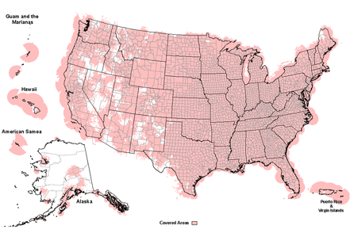

NOAA Weather Radio
KEC61 - Mobile, AL - 162.550 MHz
What is NOAA Weather Radio?
NOAA Weather Radio is a nationwide network of stations that provide 24/7 weather alerts and information. There are hundreds of networks actively broadcasting weather information across the United States & it's territories.
Here is a map of the coverage NOAA Weather Radio provides for the United States:

List of NOAA Weather Radio Stations in the Pensacola, FL area:
KEC86 - Pensacola, FL - 162.400 MHz
WNG646 - Brewton, AL - 162.475 MHz
KEC61 - Mobile, AL - 162.550 MHz
Find more information about NOAA Weather Radio here.